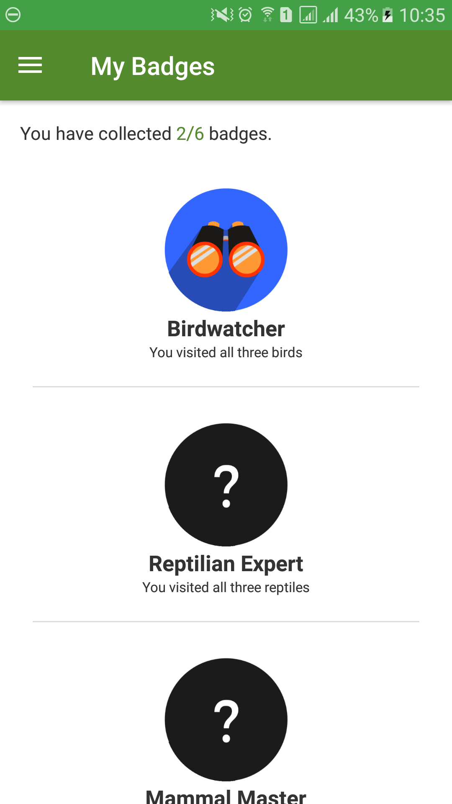
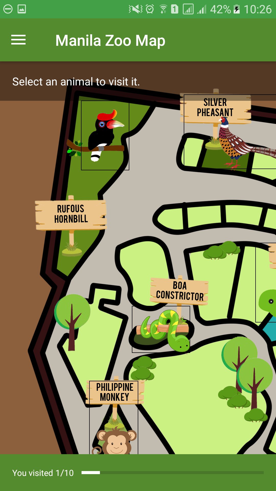
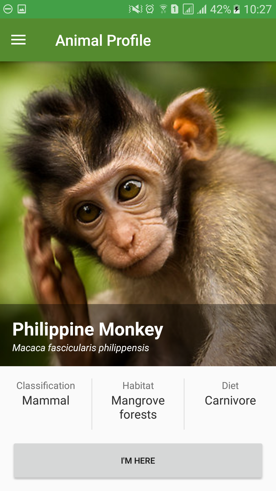
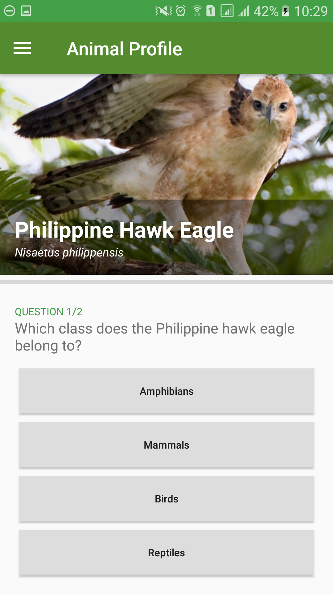
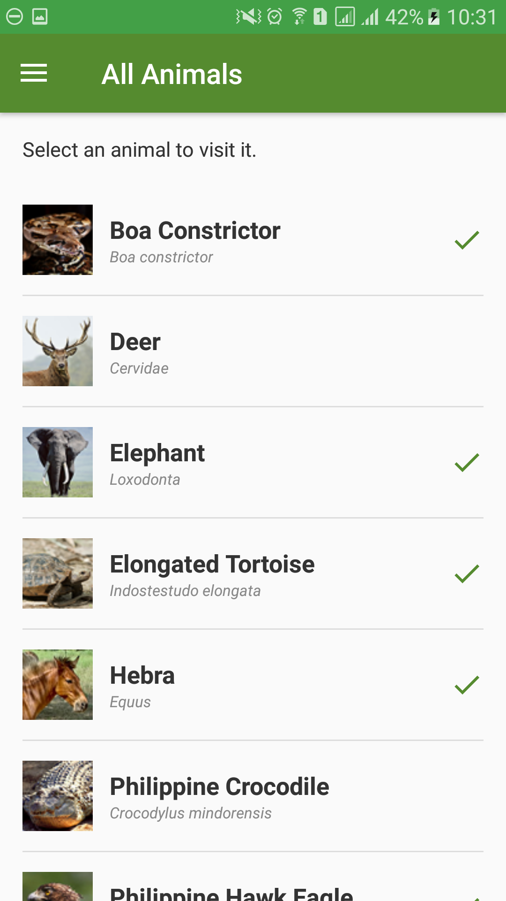
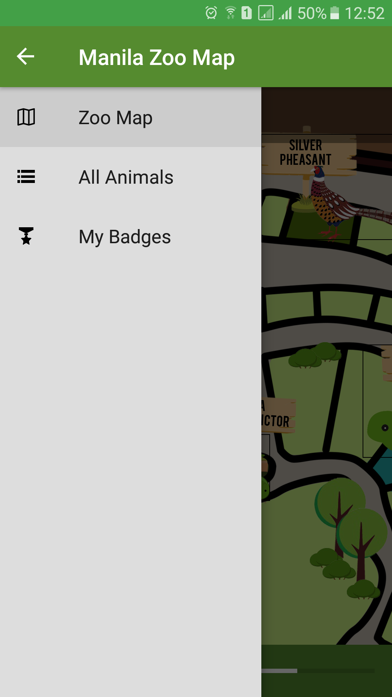
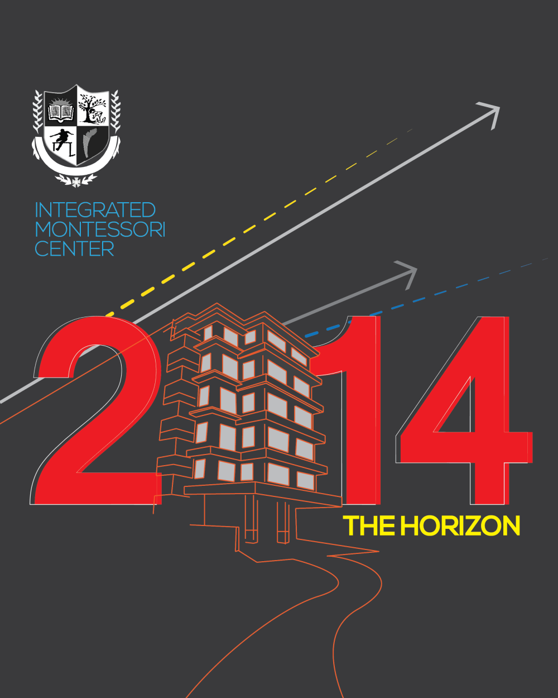
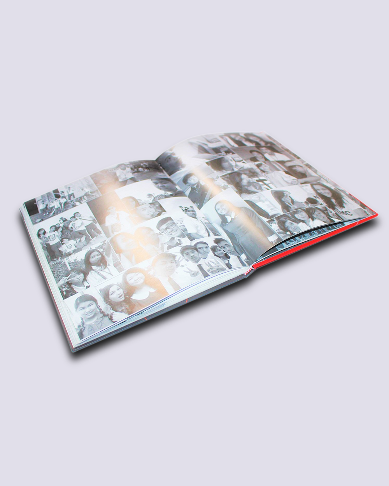
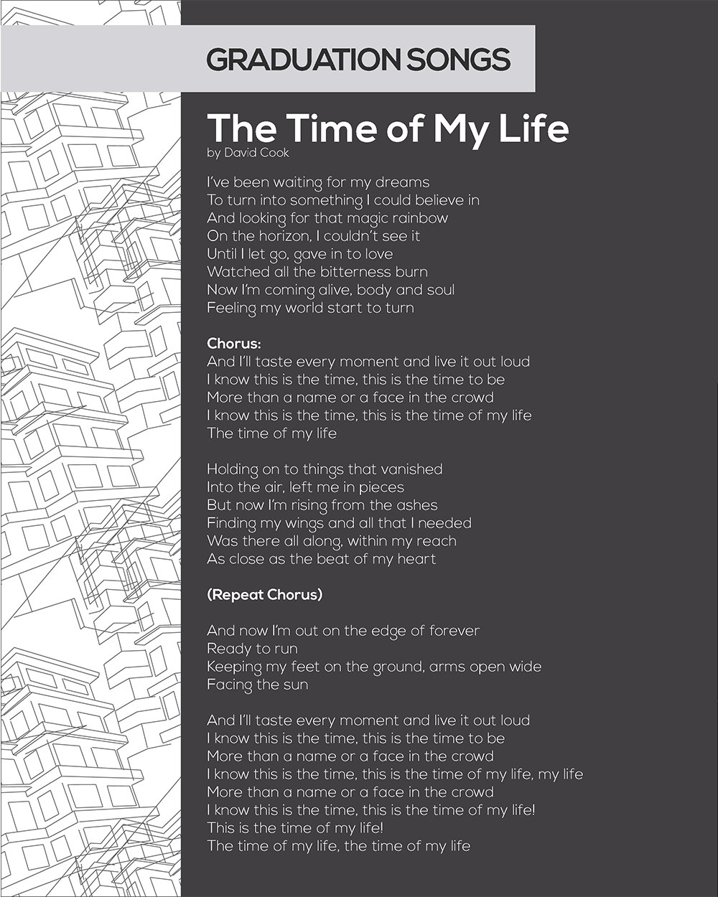

Hi! I'm Nico,
instructional designer
in Metro Manila.
instructional designer
in Metro Manila.
My goal: improving learning & performance through design & technology.
About
I am a graduate of De La Salle University - Manila with a Computer Science degree and several units of Professional Education. My interests are technology, educational psychology, and art. Often, I design graphics for small and medium businesses. Currently, I live in Metro Manila, looking for opportunities to put my skills to use.
Skills
Through my degree and my interests, I have gained skills relating to information technology, educational psychology, and multimedia development. I can:
 develop digital and non-digital learning and instructional materials,
develop digital and non-digital learning and instructional materials,
 and evaluate the efficiency and effectiveness of instructional strategies.
and evaluate the efficiency and effectiveness of instructional strategies.
design solutions to instructional and human performance problems, backed with learning theories and best practices,
create media objects (for both instructional or non-instructional purposes),
develop digital and non-digital learning and instructional materials,
and evaluate the efficiency and effectiveness of instructional strategies.
Portfolio
Teachware for the St. Luke's Medical Center Phlebotomy Training Program
This was submitted as an undergraduate thesis and was developed in cooperation with subject matter experts from St. Luke's Medical Center - Global City.
In this project, I was involved in the analysis of the stakeholders' learning and instructional needs, the design of a tool to solve the identified needs, and the development of instructional media (text, images, videos, and interactivities).
Manila Zoo Animal Guide Mobile App
This prototype was submitted as a final project in a Mobile Learning and Development course. In this project, I took part in the analysis of the learner and environment as well as the development of the Android app.






Assistive and Supportive Technology Roadmap for a Special Education Institution
This document was submitted as a final project in a Technology for Special Education course. This project involved an onsite observation of instruction in a SPED school in Makati.
Read an excerpt
Graphic Design
Logos
I design logos and other branding collaterals for small and medium businesses and organizations.
The Essence of Switzerland
I was awarded as the Under 18 Winner in the Create and Innovate Swatch Art Competition for creating this illustration showcasing Swiss culture.

The Horizon 2014
I was the Editor-in-Chief and Layout Artist in The Horizon 2014, the Integrated Montessori Center yearbook.



This Website
I also organized, designed and coded this website with HTML5, CSS, and Javascript.
Contact